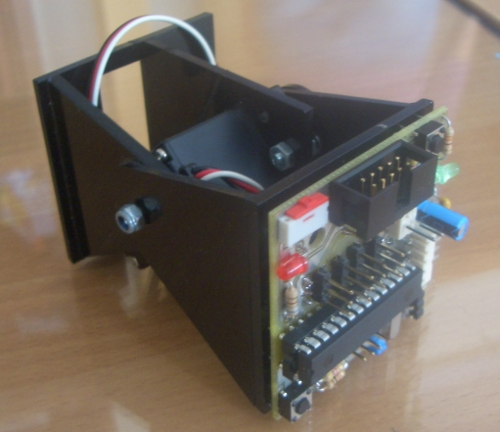
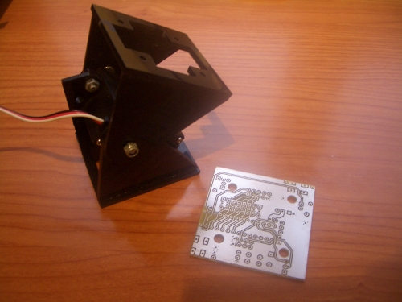
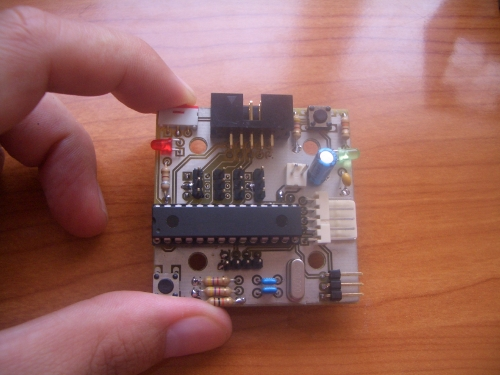

En la entrada del blog titulada: Tarjeta Skycube y Robots modulares autónomos presentamos el primer prototipo de la tarjeta Skycube, hecha a mano, que nos sirvió para evaluarla y más adelante mover a minicube-I de manera autónoma.

Ya hemos diseñado el PCB (disponible en el repositorio) con Kicad y hemos sacado 4 placas prototipo en la ETSI de Telecomunicación de la UPM. Es una placa hardware libre2. Se ha dimensionado de manera que se adapta perfectamente a los módulos Y1.

Hemos montado uno de los prototipos y lo estamos evaluando. Las primeras pruebas han sido satisfactorias, aunque como suele ocurrir, al hacer el primer prototipo siempre se encuentran errores.
Esta versión de la Skycube no será la definitva. Es una prueba de concepto. La versión final estará en smd e incorporará conexión por USB para que sea más fácil la grabación del firmware. Sin embargo, para poder hacer pruebas con robots modulares, posiblemente saquemos una tirada industrial de unas 25 unidades. Además, así podremos preparar el primer taller de robots modulares.